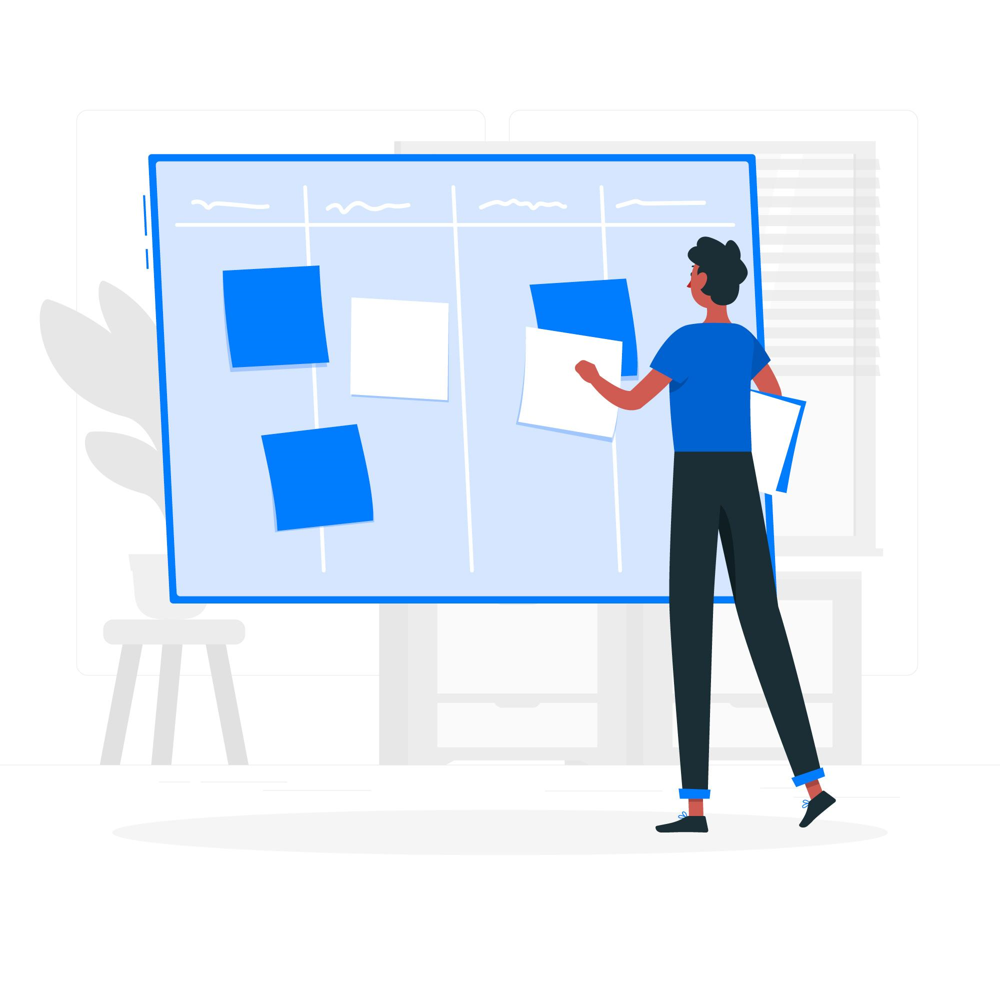
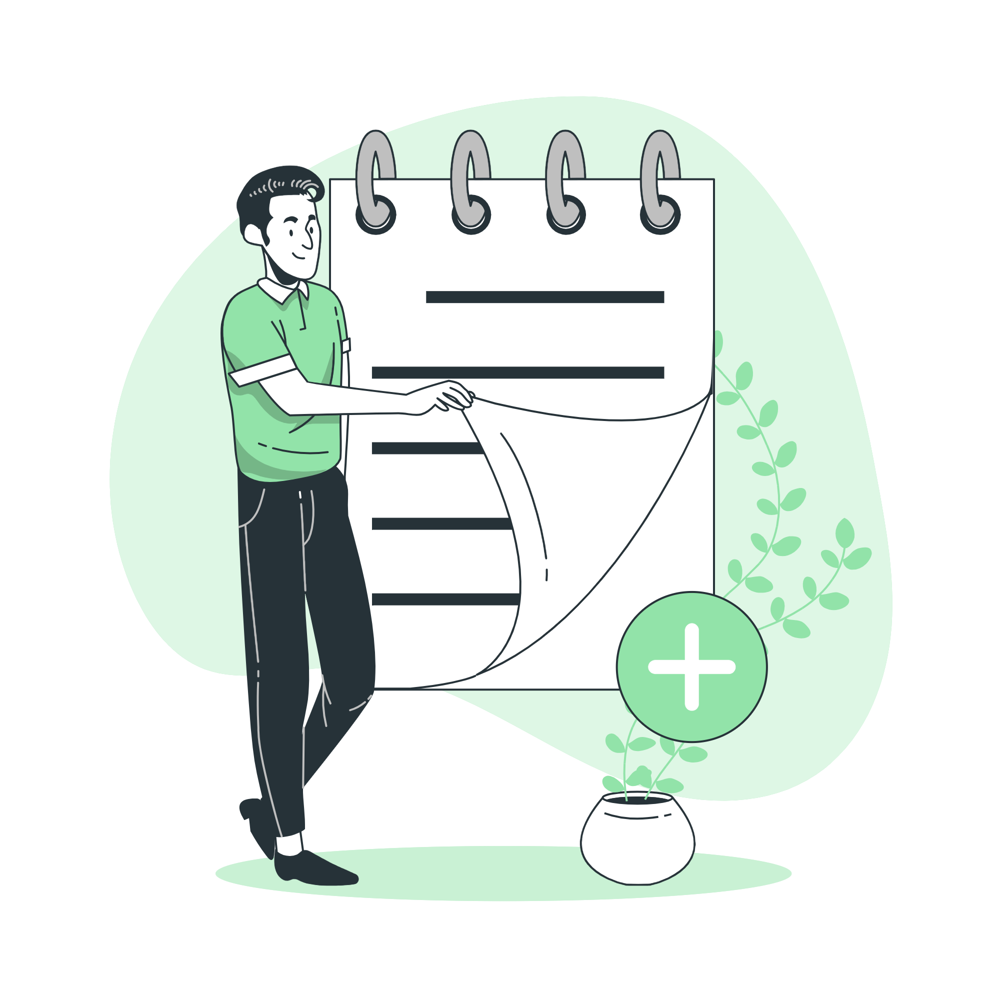

QuickNote User Guide
How to Add a Note
To add a new note, simply type your content into the provided text area. The text area is where you can input all the information you want to capture in your note.
After entering your content, click the "Save" button located below the text area to save your note. This action will add your note to your list, ensuring that all your important information is stored securely.

Adding Tags
Organize your notes by adding tags. Tags help categorize and filter your notes based on specific topics or themes.
Select tags from the dropdown menu to categorize your note. Tags help you organize and filter your notes.

Setting Reminders
Set a reminder for your note using the datetime picker.
Once set, you will receive a Notification at the specified time to remind you of the task or deadline associated with the note.

Managing Categories
Adding a Category: To add a new category, click the "Add Category" button. A prompt will appear asking you to enter the name of the new category. Type in the category name and click "OK." If the category does not already exist, it will be added to your list of categories. If the category already exists, you will be notified with a warning message.
Deleting a Category via Right-Click: To delete a category using the right-click context menu, navigate to the "Category Selector" dropdown. Right-click on the category you wish to delete and select the "Delete Category" option from the context menu. A prompt will appear asking you to confirm the deletion.
Be cautious when deleting categories as this action cannot be undone, and it may affect the organization of your notes.
Searching Notes
Use the Search bar to quickly find notes by keywords or tags. Type your query and press enter to search.
Viewing Note History
Viewing Note History: To view the history of your notes, click on the "View History" button. This will open the history modal, displaying a list of all actions performed on your notes, including creation, editing, and deletion. Each entry in the history will show details such as the action taken, the timestamp, and, if applicable, the old and updated versions of the note.
Deleting a History Entry: To delete a specific entry from the note history, locate the entry you wish to remove within the history modal. Click on the "Delete" button next to the entry. A confirmation prompt will appear, asking you to confirm the deletion. Once confirmed, the entry will be removed from the history. Note that this action is permanent and cannot be undone.
Automatic Deletion of Old History: The note history will be automatically cleaned up to remove entries older than 2 days. This ensures that your history remains manageable and relevant. Entries that are older than this period will be deleted automatically, keeping only recent and relevant note history.
